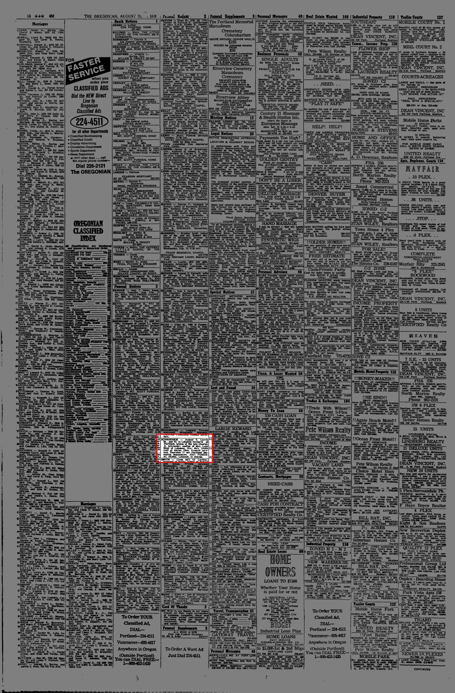

Carrie May Newman 1878–1970
Peter's great-grandmother by adoption.
Also recorded as Carrie Ann (2015 tree); May C. Alderson (1910 census); Carrie May Schroeder (1952).
Carrie May Newman was born on 24 May 1878 in Oak Orchard, United States (according to an online family tree)1, the daughter of Edward Newman and Harriet M Brate13. She married Winter Scott Alderson on 4 Sep 1892 in Gilliam County, Oregon, United States (according to an online family tree)14. She died on 9 Aug 1970 in Lebanon, Oregon, United States1,10 and was buried at Wilhelm's Portland Memorial Mausoleum, Portland, Multnomah County, Oregon, United States1,11.
Family
- Parents
- Edward Newman 1844–1909 and Harriet M Brate 1847–1924 tradition
- Husband
- Winter Scott Alderson 1866–1933 · married on 4 Sep 1892 in Gilliam County, Oregon, United States14
- Children
- Estella May Alderson 1916–2008 adoptive
- Lola Lucille Alderson 1893–1984 documented
- Elmer Ellsworth Alderson 1895–1944 documented
Life events
| Event | Date | Place and details |
|---|---|---|
| Born | 24 May 1878 | Oak Orchard, United States According to an online family tree1 |
| Lived | 1880 | Ash Rock, United States According to an online family tree1 |
| Lived | bet 1882 and 4 Sep 1892 | Gilliam County, Oregon, United States2 |
| Lived | Mar 1882 | California, United States3 |
| Married | 4 Sep 1892 | with Winter Scott Alderson Gilliam County, Oregon, United States According to an online family tree14 |
| Lived | 19 Jun 1893 | Umatilla County, Oregon, United States4 |
| Lived | 22 Oct 1895 | Portland, Multnomah County, Oregon, United States5,6 |
| Lived | 1910 | Milwaukie, Clackamas County, Oregon, United States According to an online family tree1 |
| Note | 23 Apr 1910 | Milwaukie, Clackamas County, Oregon, United States 1910 census, ED 37, sheet 8A, lines 1–5. Winter S. (43) and May C. (33), married 18 years; she is 'mother of 2 children, 2 living'. The children are Lola L. (17, b. Oregon) and Elmer E. (14, b. Oregon), and Hattie Newman, mother-in-law, 61, lives with them. The same sheet lists a Barnes family…12 |
| Lived | 1920 | Portland, Multnomah County, Oregon, United States According to an online family tree1 |
| Lived | 1930 | Portland, Multnomah County, Oregon, United States According to an online family tree1 |
| Married | 18 Nov 1933 | Vancouver, Clark County, Washington, United States9 |
| Lived | 1935 | Portland, Multnomah County, Oregon, United States According to an online family tree1 |
| Lived | 12 Apr 1940 | Concord, Oregon, United States1,7 |
| Lived | 12 Mar 1944 | Milwaukie, Clackamas County, Oregon, United States8 |
| Lived | 1949 | United States According to an online family tree1 |
| Lived | 10 Apr 1950 | Concord, Oregon, United States According to an online family tree1 |
| Died | 9 Aug 1970 | Lebanon, Oregon, United States1,10 |
| Buried | 13 Aug 1970 | Wilhelm's Portland Memorial Mausoleum, Portland, Multnomah County, Oregon, United States1,11 |
Records



Open questions
Sources
- FamilySearch Family Tree: Carrie May Newman (KGWM-KQ2).
- NUMIDENT and 1949 Washington death record of Grover Cleveland Newman, 1901 BC marriage of Lilly E. Newman, and 1892 elopement from Fossil.
Grover Cleveland Newman: Birth 28 Apr 1887 @ Fossil Wheel*, Oregon, United States; ParentChild: Edward Newman, Hattie M Brate … Lilly E Newman (JD8G-HXW): Birth 1882 @ Fossil, Oregon … Winter Scott Alderson (L51K-5YQ): Eloped 16 August 1892 @ Fossil, Gilliam, Oregon, United States; Carrie May Newman (KGWM-KQ2): Marriage 4 September 1892 @ Gilliam, Oregon, United States
Grew up with her parents in Fossil, Gilliam County, Oregon (where her younger siblings Lilly E. and Grover Cleveland Newman were born between 1882/1884 and 1886/1887), eloped from Fossil with Winter Scott Alderson on 16 August 1892, and married him in Gilliam County on 4 September 1892.
- Household of Edward Newman, Toroda Creek, Okanogan, Washington.
William Newman: Birth Mar 1882 @ California; Census 1900 @ Toroda Creek, Okanogan, Washington, United States
Inferred to have moved west at age 3 with her parents Edward and Harriet Newman via California, where her younger brother William Newman was born in March 1882 according to the 1900 US census.
- Oregon birth records of Lola Lucille Alderson (Webster), 19 Jun 1893.
Lola Lucille Webster: Birth 19 Jun 1893 @ Umatilla, Umatilla, Oregon, United States; Father: Winter Scott Alderson; Mother: Carrie May Newman Alderson
Lived in eastern Oregon when her daughter Lola Lucille Alderson was born on 19 June 1893 (recorded as Umatilla County in HR3B-1P2M and Wheeler County in W7J8-HGN2).
- Death Certificate of Elmer Elsworth Alderson, 12 March 1944 (State File No. 1010), and Portland Birth Register, 22 October 1895 (#79).
3(a) FULL NAME: Elmer Elsworth Alderson | 7. Birth date of deceased: October 22, 1895 | 8. AGE: Years 48 | Months 4 | Days 20 | 9. Birthplace: Portland, Oregon | 12. Father's name: Winter Scott Alderson | 13. Father's birthplace: Yreka, Calif. | 14. Mother's maiden name: Carrie May Newman | 15. Mother's birthplace: New York | 16(a) Informant's own signature: Mrs Carrie Schroeder | (b) Address: Rt 1 Box 3876 Portland [1895 register #79: October 22, [1895] | not given | M | W | Scott & Mrs. Alderson | American | Laborer | Kennalworth | E. Thornton]
Birth of son Elmer Elsworth Alderson on 22 October 1895 in the Kenilworth neighborhood of Portland, Multnomah County, Oregon: on the 1895 Portland birth register (entry #79, 84KN-27MM), the parents are recorded as 'Scott & Mrs. Alderson | American | Laborer | Kennalworth | E. Thornton'; on Elmer's 12 March 1944 Oregon death certificate (State File No. 1010, ZNLQ-YFPZ), where his mother signed Box 16(a) as informant ('Mrs Carrie Schroeder | Rt 1 Box 3876 Portland'), his birth is recorded as 'October 22, 1895' at 'Portland, Oregon' to father 'Winter Scott Alderson' (born 'Yreka, Calif.') and mother 'Carrie May Newman' (born 'New York').
- Death Certificate of Elmer Elsworth Alderson, 12 March 1944 (State File No. 1010), and Portland Birth Register, 22 October 1895 (#79).
Elmer Elsworth Alderson (ZNLQ-YFPZ): Birth 1895 @ Portland, Oregon; Death 12 Mar 1944 @ Portland, Washington, Oregon, United States; ParentChild: Winter Scott Alderson, Carrie May Newman Newman … Alderson (84KN-27MM): Birth 22 Oct 1895 @ Oregon, United States; ParentChild: Scott Alderson, Alderson
Lived in Portland, Multnomah County, Oregon when her son Elmer Elsworth Alderson was born there on 22 October 1895.
- 1940 US Census, Concord Precinct 25, Clackamas County, Oregon, ED 3-20, sheet 5A, lines 11–14 (and Supplementary Line 14).
Gordon St | 105 | O | 3000 | No | Schroeder, Charles | Head | M | W | 62 | M | No | 8 | Illinois | Portland, Multnomah, Oregon | No | Yes | 40 | Machinist | Gas Company | PW | 52 | 1560 | Yes / [Schroeder] Carrie May (x) | Wife | F | W | 61 | M | No | 8 | New York | Portland, Multnomah, Oregon | No | No | No | No | H | 0 | 0 | No
1940 US Census (enumerated 12 April 1940, Concord Precinct 25, Clackamas County, Oregon, ED 3-20, sheet 5A, lines 11–12, on [address omitted], household #105): Carrie May Schroeder (informant marked (x)), age 61, married, completed 8th grade, born in New York, resided in Portland, Multnomah County, Oregon on 1 April 1935, with husband Charles Schroeder (head, owns home worth $3,000, age 62, born Illinois, machinist at gas company, worked 52 weeks in 1939 earning $1,560), immediately next door to daughter Stella May Rowley (23) and son-in-law (Sherwin) William Rowley (24) at household #106.
- Obituary: Elmer E. Alderson, Oregon Journal (Portland, Oregon), 14 March 1944, p. 7.
Elmer E. Alderson Elmer Ellsworth Alderson, a mechanic for the city for over 18 years, died Sunday at- his home, 1425 SW Clay-street. Funeral services will be at 1:30 p. m. Wednesday in .Portland crematorium''.chapel; with uthe Rev.; F. B. Culver, pastor of Lents Evangelical church, officiating. A. J. Rose & Son have charge of arrangements. He was born here in. 1895. He is survived by his wife,-*>yera; children. Lionel E.,- Elmer" WvpShirley May and Raymond E. Alderson; stepchild, Vearl Elliott; parents, Mr. and Mrs. Charles G. Schroeder, •Milwaukie; sisters, Mrs. Lola Webster, Newport, and Mrs. Stella Rowley, Milwaukie, and four grandchildren.
Translation: Elmer E. Alderson: Elmer Ellsworth Alderson, a mechanic for the city for over 18 years, died Sunday at his home, 1425 SW Clay street. Funeral services will be at 1:30 p. m. Wednesday in Portland crematorium chapel, with the Rev. F. B. Culver, pastor of Lents Evangelical church, officiating. A. J. Rose & Son have charge of arrangements. He was born here in 1895. He is survived by his wife, Vera; children, Lionel E., Elmer W., Shirley May and Raymond E. Alderson; stepchild, Vearl Elliott; parents, Mr. and Mrs. Charles G. Schroeder, Milwaukie; sisters, Mrs. Lola Webster, Newport, and Mrs. Stella Rowley, Milwaukie, and four grandchildren.
Residing in Milwaukie, Clackamas County, Oregon, with her second husband Charles G. Schroeder ('parents, Mr. and Mrs. Charles G. Schroeder, Milwaukie') at the death of her son Elmer Ellsworth Alderson (1895–1944; mechanic for the City of Portland for over 18 years, who died Sunday, 12 March 1944 at his home, 1425 SW Clay St., Portland).
- Marriage of Charles G Schroeder and Carrie M Newman Alderson, 18 Nov 1933, Vancouver, Clark, Washington.
Charles G Schroeder (Age=55) & Carrie M Newman Alderson (Age=55, father Edward Newman, mother Harriet Brite): Marriage 18 November 1933 @ Vancouver, Clark, Washington, United States
After the death of her first husband Winter Scott Alderson in February 1933, she married Charles G. Schroeder (age 55, son of Charles J. Schroeder and Bertha Hartky) on 18 November 1933 in Vancouver, Clark County, Washington.
- Death Notice: Schroeder — Carrie M., The Oregonian (Portland, Oregon), 11 August 1970, p. 34; and Oregon Journal, 11 August 1970, p. 24.
SCHROEDER — August 9, Carrie M-, age 92, In Lebanon formerly of Portland, widow of the late Charles G. Schroeder; mother of Mrs. Lola West of Lebanon, Ore; Mrs. Stella Hall of Akron, Ohio. Funeral services Thursday 11 am Portland Memorial Mausoleum. JOST FUNERAL HOME, Lebanon, in charge.
Translation: SCHROEDER — August 9, Carrie M., age 92, in Lebanon formerly of Portland, widow of the late Charles G. Schroeder; mother of Mrs. Lola West of Lebanon, Ore.; Mrs. Stella Hall of Akron, Ohio. Funeral services Thursday 11 am Portland Memorial Mausoleum. JOST FUNERAL HOME, Lebanon, in charge.
Died Sunday, 9 August 1970, in Lebanon, Linn County, Oregon, age 92; formerly of Portland; widow of the late Charles G. Schroeder; mother of Mrs. Lola West of Lebanon, Oregon, and Mrs. Stella Hall of Akron, Ohio; funeral services Thursday, 13 August 1970 at 11 a.m. at Portland Memorial Mausoleum, Jost Funeral Home of Lebanon in charge.
- Funeral Notice: Schroeder — Carrie M., The Oregonian (Portland, Oregon), 11 August 1970, p. 34.
Funeral services Thursday 11 am Portland Memorial Mausoleum. JOST FUNERAL HOME, Lebanon, in charge.
Funeral services and entombment/interment on Thursday, 13 August 1970 at 11:00 a.m. at Portland Memorial Mausoleum, Portland, Oregon (Jost Funeral Home, Lebanon, in charge).
- S-fs-MLY2-9PZ.
Alderson, Winter S. | Head | M W 43 M1 18 ... May C. | Wife | F W 33 M1 18 | 2 | 2 | New York
1910 census, ED 37, sheet 8A, lines 1–5. Winter S. (43) and May C. (33), married 18 years; she is 'mother of 2 children, 2 living'. The children are Lola L. (17, b. Oregon) and Elmer E. (14, b. Oregon), and Hattie Newman, mother-in-law, 61, lives with them. The same sheet lists a Barnes family (Edward, 48, b. Michigan; Mattie M., b. Nebraska), which is not linked to Irene.
- FamilySearch Family Tree: Carrie May Newman (KGWM-KQ2), parents.
- FamilySearch Family Tree: Winter Scott Alderson (L51K-5YQ).